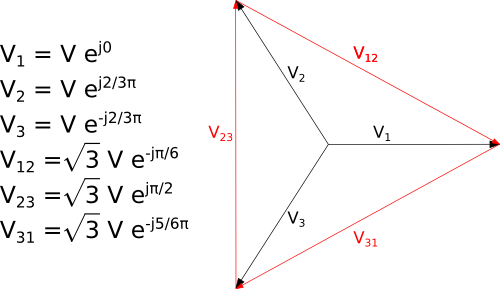

Three phases unbalanced AC systems
Package with models for alternate current (AC) three phase unbalanced systems.
The models in this package use the models of the package
Buildings.Electrical.AC.OnePhase to fully describe the three-phase.
The models that are part of this package assume by default 480 V as the nominal RMS phase to phase voltage. This default can be changed.
In this package the voltage phasors are measured using the convention shown below.
The phase to phase RMS voltages are by default 480 V,
which is equal to sqrt(3) times the
phase to neutral voltage V, which is 277.13 V.

In this package the voltage phasors are measured using the convention shown above.
The phase to phase RMS voltage equal to 480 V, is equal to sqrt(3) times the
phase to neutral voltage V that is equal to 277.13 V.
Extends from Modelica.Icons.VariantsPackage (Icon for package containing variants).
| Name | Description |
|---|---|
| Package with converter and transformer models for three-phase unbalanced AC systems | |
| Lines | Package with transmission line models for three-phase unbalanced AC systems |
| Package with load models for three-phase unbalanced AC systems | |
| Package with sensor models for three-phase unbalanced AC systems | |
| Package with sources model for three-phase unbalanced AC systems | |
| Package with validation examples and tests for the AC three-phase unbalanced models | |
| Package with interfaces for three-phase unbalanced AC models |